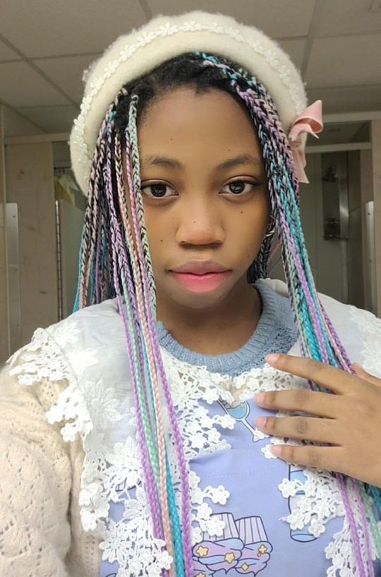

About Me:

My name is Ariel Mercurius.
I am a second year Game Design and Development Major.
I am an avid doll collector, from playline dolls to Collector BJDs.
I wear different Harajuku street fashion subcultures,
specifically Sweet Lolita and Fairy Kei.
I am also a member of the performance team for RIT's very own Nova Dance Crew.
I am a huge weeb. I love anime, donghua, mangas, manhuas, you name it! I also, of course, love playing games. Though, I would not say that I am very good at them.
My ultimate goal is to work in the Game Industry, maybe with concept design and at an indie company. Bigger studios are fine, but I am not quite sure which area of industry I want to focus on. Working for an indie company would give me the opportunity to wear many hats and be able to fall back on other skills if something does not work out. The most I want from my major is as much information as I would need to find a job in the real world and be competant at it. I hope to gain skills in this class that I can use to padd my resume and perhaps build my own portfolio website from scratch in the future.